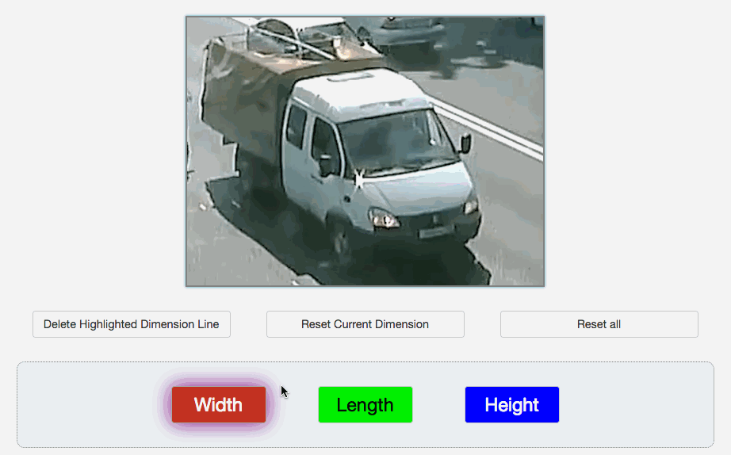

In this HIT, you will be provided with images of vehicles in a real-road setting. Your job is to mark different dimensions: the width, length, and height of the vehicles using the tool we provided.
Specifically:
First click on , and then draw dimension lines you think that can indicate the width of the vehicle on the canvas. To draw a dimension line:
- Press and hold the left key of your mouse to initiate a starting point.
- Hold the left key down and move the cursor across the canvas to form a line.
- Release the left key when you reach the end point. A red line will then be set on canvas.
- Repeat the above steps to draw new lines that you think can also represent the width of the car.
When you are finished with width, please move on to length and height by clicking on and and carry out the same steps as above. The dimension you are currently working on will be indicated with a purple shadow.
For example:
Step 2: Fine tune the dimension lines
If you find some of the dimension lines you drew in the first step is not accurate enough, say one of the lines for height, you can modify in the following way:
- Click to select to work on height.
-
To adjust the position of a particular dimension line:
- Move the cursor across the canvas to either end points of that line. The end point you chose will grow bigger upon cursor hovering.
- Click and hold the left key of the mouse and move the end point to a more precise location on canvas.
-
To delete a particular dimension line:
- Move the cursor across the canvas. When you move close to a blue dimension line representing the height, it will be highlighted with a glowing yellow border. Click the left key of the mouse to select that dimension line.
- Click on to delete this dimension line.
-
To Reset everything for a dimension (in this case, height):
- Make sure you are have selected the current working dimension (indicated with a purple shadow), and then click to remove everything for the current dimension.
-
To Reset everything for ALL dimensions:
- Click . Note that this will erase everything you've worked on so far for the current image. Please be careful!
For example:
Modify

Delete
Reset
Reset all
There are altogether 7 images in this HIT. Please click on Next to navigate to the next image when finished with the current one. You could always go back to previous batches by clicking on Previous.
We highly recommend playing with the system for a while before actually starting the HIT. You will be paid for this period of learning process.